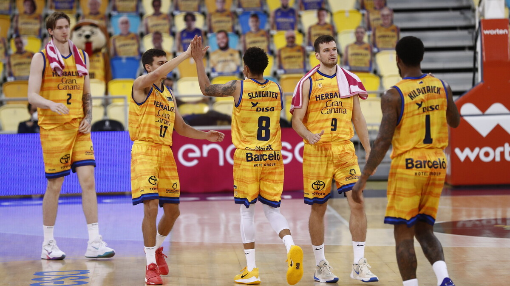
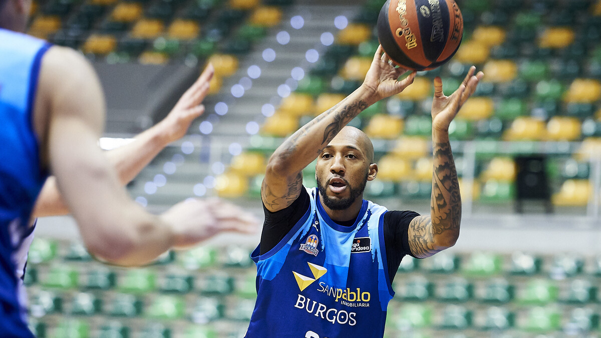

Un colosal Slaughter lanza al Herbalife GC

Un colosal AJ Slaughter (38 puntos) remontó y sentenció a un Movistar Estudiantes (97-94) que tuvo
la bola para la segunda prórroga.
El Herbalife Gran Canaria revive en la Liga Endesa tras vencer al Movistar Estudiantes en un
encuentro dinámico, lleno de alternativas, y en el que se impuso en la prórroga después de remontar
una desventaja de 14 puntos en el cuarto periodo (97-94).
La polivalencia del norteamericano con pasaporte polaco AJ Slaughter, que firmó 38 puntos y 41 de
valoración, sirvió para desactivar los esfuerzos de los visitantes Aleksa Avramovic (22 puntos) y
Alec Brown (16).
leer más [...]
Urbas Fuenlabrada se lleva un thriller

Apretando en defensa, el Urbas Fuenlabrada consiguió una victoria balsámica frente a un rival
directo, un Acunsa GBC que no se lo puso nada fácil. Eyenga (11+10, 27 val.), el mejor jugador del
partido.
En una sufrida remontada, el Urbas Fuenlabrada derrotó al Acunsa Gipuzkoa Basket (78-74) y toma aire
hacia la salvación al imponerse a un rival directo, al que deja a dos victorias y con la diferencia
particular a su favor, pese a haber ido a remolque casi todo el encuentro.
La reacción final del Urbas Fuenlabrada, liderada por el congoleño Christian Eyenga (11 puntos y 10
rebotes) y el nigeriano Obi Emegano (13 puntos), que hizo la canasta final, salvó el partido de un
equipo lastrado por sus malas elecciones en ataque y fallos en tiros libres (18 de 29) y triples (4
de 19, 21%), que se sostuvo por los rebotes del canadiense Kyle Alexander (10 capturas y 12 puntos)
y el 'doble-doble' del brasileño Leo Meindl (13 puntos y 12 rebotes).
leer más [...]